АО «Кавминводы»
История
От регистрации предприятия в 1995 году до фирменного магазина в Пятигорске — три десятилетия в датах и фотографиях
Предприятие создавалось ради одной задачи — донести минеральную воду до потребителя в первозданном виде. Ниже — как эта задача превращалась в завод, линейку продукции и стандарты качества: год за годом, по архиву АО «Кавминводы».
-
1995
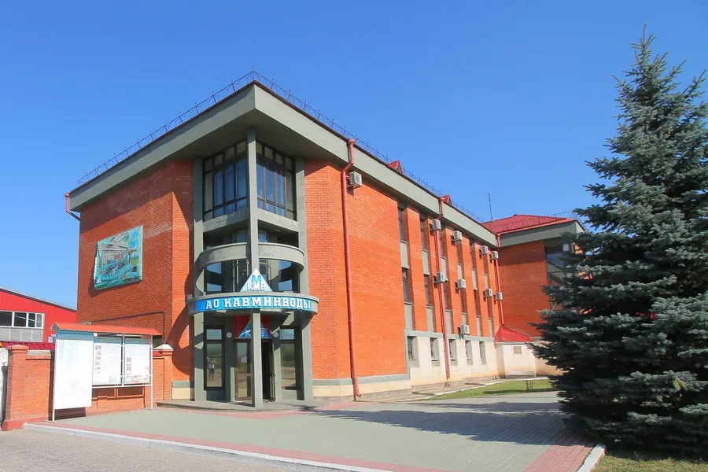
В феврале 1995 года зарегистрировано новое предприятие — ОАО «Кавминводы», впоследствии преобразованное в АО «Кавминводы». Цель — создать технологию, которая доносит минеральную воду до потребителя в первозданном виде, с сохранением её природных свойств.
-
1997
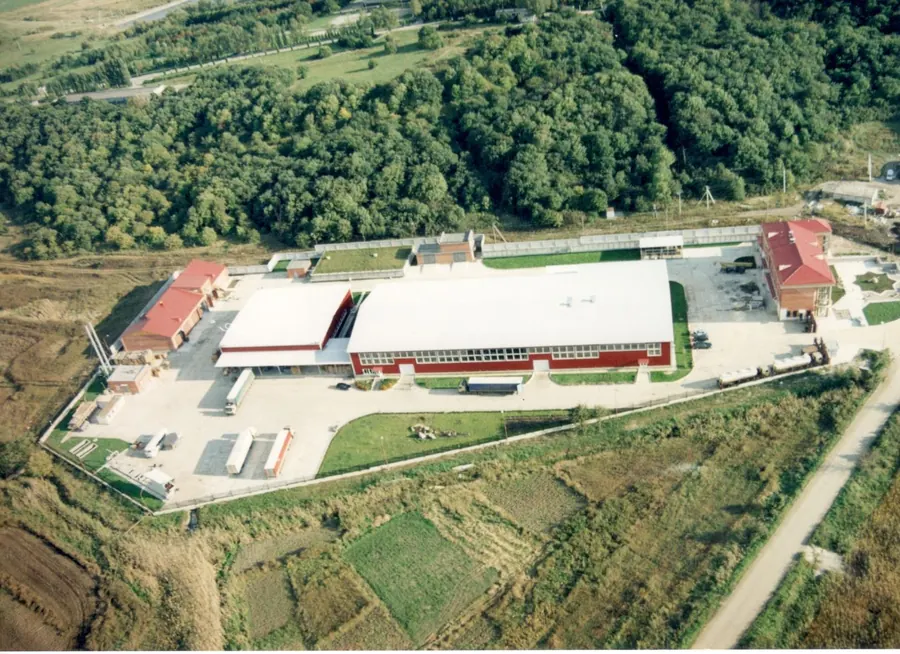
В феврале 1997 года начались первые монтажные работы по установке и наладке оборудования. За короткое время в посёлке Новотерский Минераловодского района выросло современное производство. В апреле 1997 года завод выпустил первую бутылку «Новотерской целебной»: она получила признание специалистов и первый диплом на Берлинской выставке минеральных вод. Этот день принято считать профессиональным праздником АО «Кавминводы».
-
1999
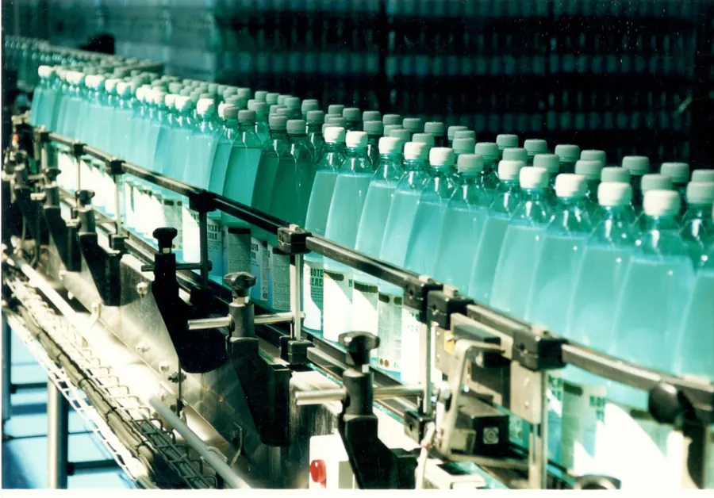
Компания разработала и внедрила систему менеджмента качества, которая соответствует требованиям международного стандарта ИСО 9000-1996.
-
2000
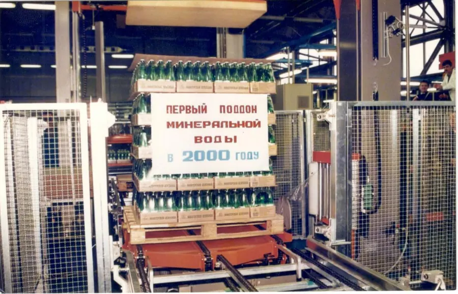
В январе 2000 года введена в эксплуатацию вторая линия по розливу минеральной воды в стеклянные бутылки объёмом 0,44 л и 0,5 л. Потребители получили возможность приобретать «Новотерскую целебную» в классической стеклянной таре.
-
2001
В марте 2001 года ЗАО «Кавминводы» первым среди пищевых предприятий Ставропольского края получило сертификат соответствия системы качества ИСО 9001-96. В июле 2001 года «Новотерская целебная» получила официальное признание в Германии, в соответствии с которым натуральная минеральная вода вышла на рынок стран Европейского союза. Завод посетил президент России В. В. Путин — глава государства положительно отозвался об уровне производства молодого предприятия. В том же году отпразднован выпуск 150-миллионной бутылки.
-
2002
Рост потребительского спроса на «Новотерскую целебную» требовал новых мощностей. В феврале 2002 года началось строительство второй производственной площадки предприятия, мощности которой превышали имеющиеся в два раза.
-
2003
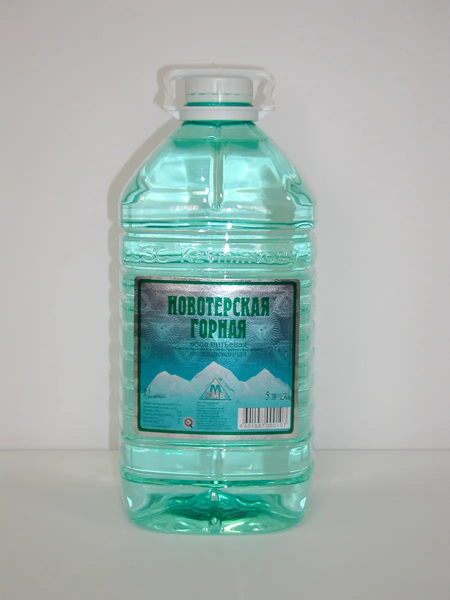
В апреле 2003 года заработал второй производственный корпус завода — это позволило увеличить объёмы выпуска и расширить ассортимент. Под торговой маркой «Новотерская» начат розлив питьевой воды «Новотерская горная». В декабре 2003 года звезде девятой величины в созвездии Тельца присвоено имя «Новотерская целебная минеральная». За значительные достижения в области качества продукции и внедрение высокоэффективных методов управления качеством предприятие в 2003 году стало лауреатом Премии Правительства РФ в области качества.
-
2004
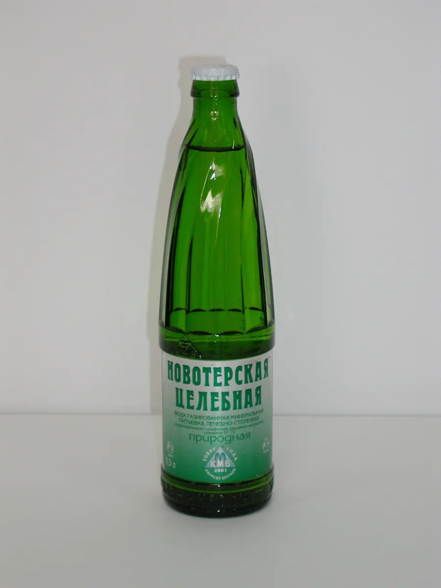
В 2004 году введена в эксплуатацию линия по розливу питьевой воды «Новотерская горная» в поликарбонатные бутыли 19 л для кулеров. Начат розлив минеральной воды в эксклюзивную стеклянную тару ёмкостью 0,5 л, которая стала важной частью фирменного стиля завода: оригинальная форма бутылки надёжно защитила покупателя от подделки.
-
2005
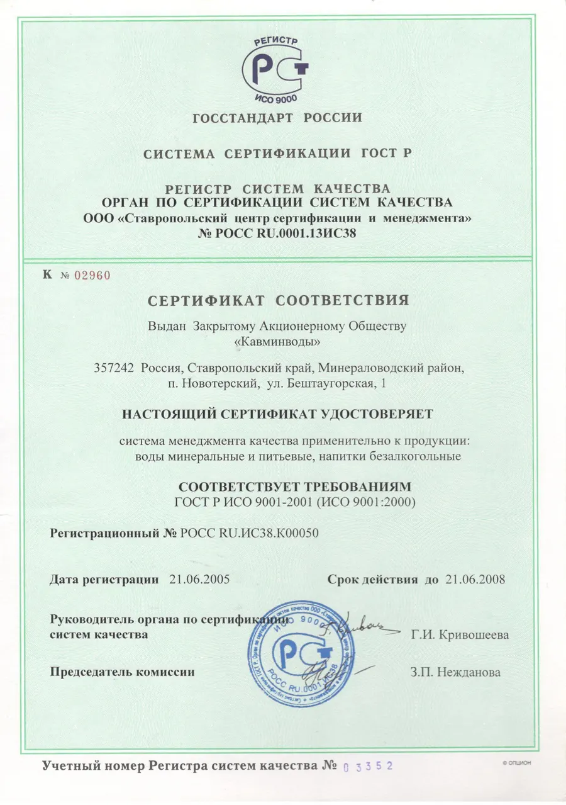
На предприятии разработана и внедрена система в области менеджмента качества пищевой продукции на соответствие международному стандарту ГОСТ Р ИСО 9001-2001 (ИСО 9001:2000).
-
2007
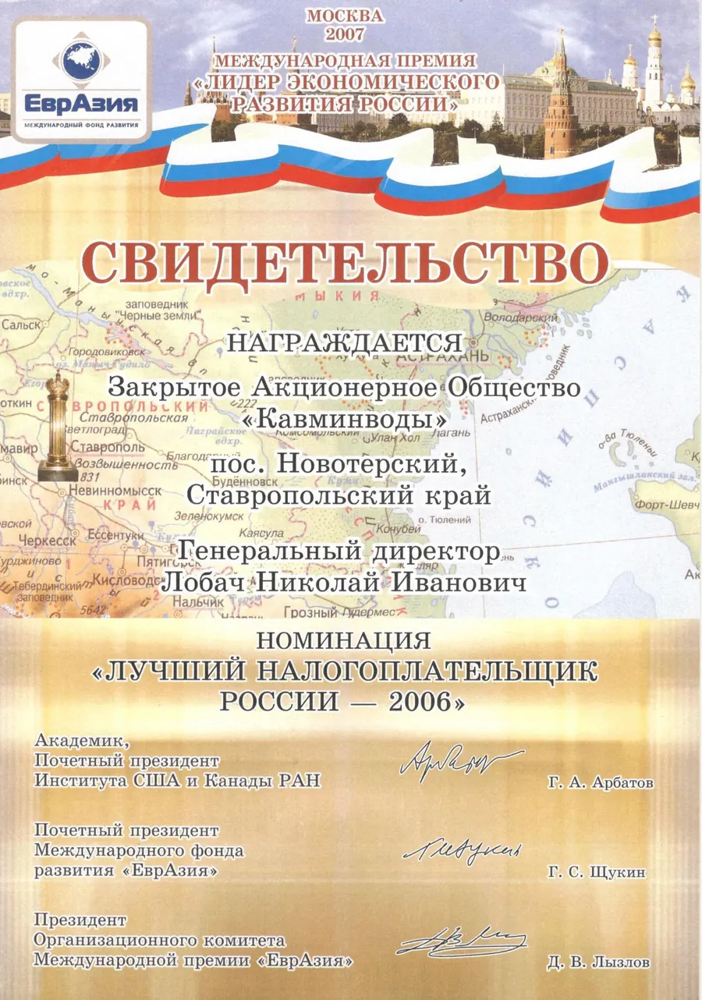
ЗАО «Кавминводы» получило премию «Лидер экономического развития России» от Международного фонда развития «Евразия», Международной организации предпринимателей и US Priority Interprise в номинации «Лучший налогоплательщик России».
-
2008
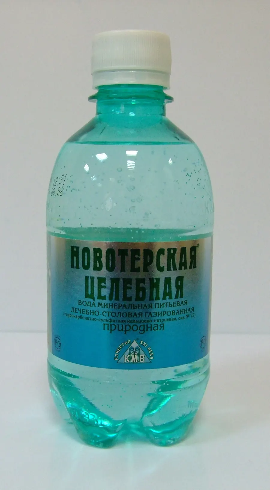
На предприятии внедрена система менеджмента качества по производству и поставке минеральных и питьевых вод. В линейке минеральной воды «Новотерская целебная» появляется ПЭТ-бутылка 0,33 л: компактный формат не занимает много места, но обязательно утолит жажду на прогулке.
-
2010
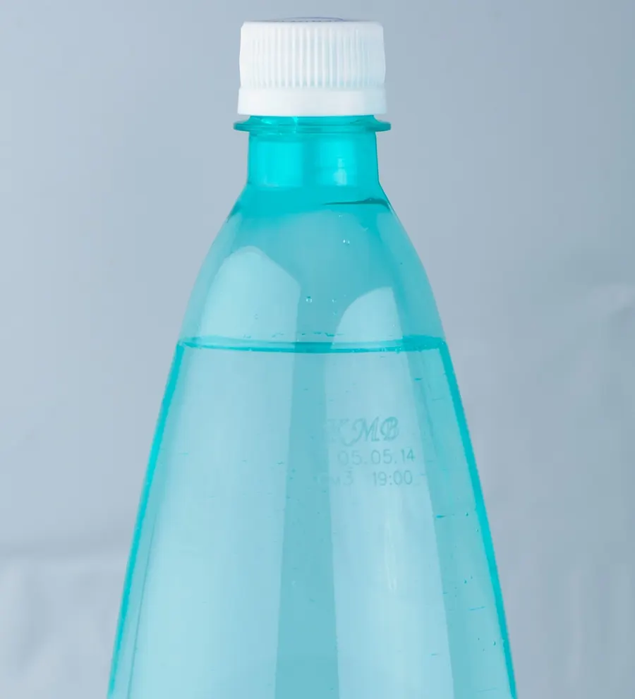
Маркировка ПЭТ-бутылок стала производиться на лазерном оборудовании — это стало дополнительной защитой оригинальной продукции от подделок.
-
2011
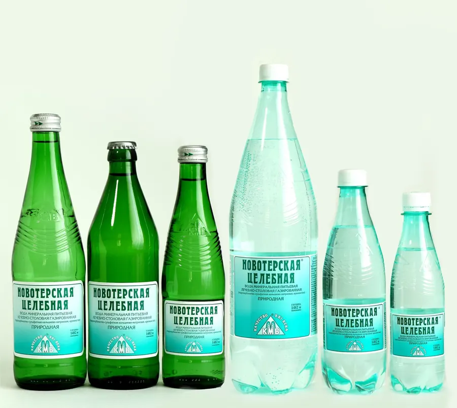
Обновлена система менеджмента качества по производству и поставке минеральных и питьевых вод на соответствие стандарту ГОСТ Р ИСО 9001-2008 (ИСО 9001:2008). Бутылки ТМ «Новотерская» получили изящный дизайн: выгравированные в верхней части волны. В ассортиментной линейке минеральной воды появляется фирменная стеклянная бутылка ёмкостью 0,33 л. Питьевая вода «Новотерская горная» переименована в «Новотерскую».
-
2014
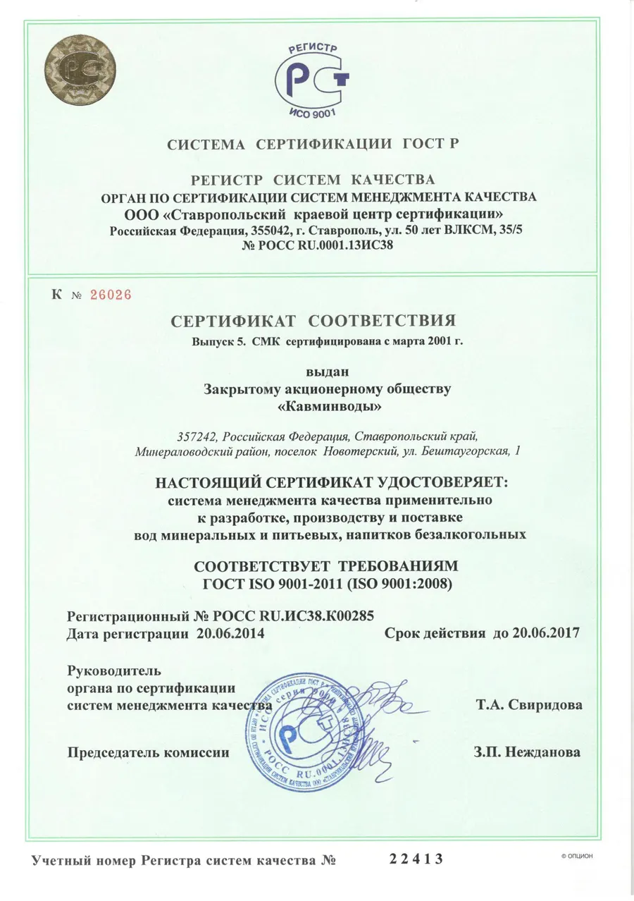
На предприятии внедрена система менеджмента качества на соответствие стандарту ГОСТ ISO 9001-2011 (ISO 9001:2008).
-
2015
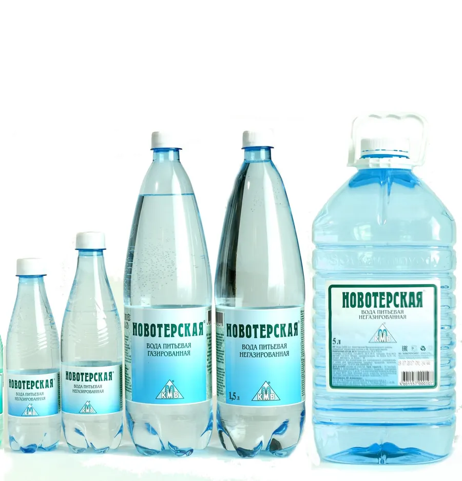
В связи с частыми вопросами покупателей об отличии «Новотерской целебной» и «Новотерской» было принято решение изменить цветовую гамму питьевой линейки. Питьевая вода «Новотерская» стала разливаться в бутылки голубого цвета, а бутылка с «Новотерской целебной» сохранила оригинальный бирюзовый цвет.
-
2017
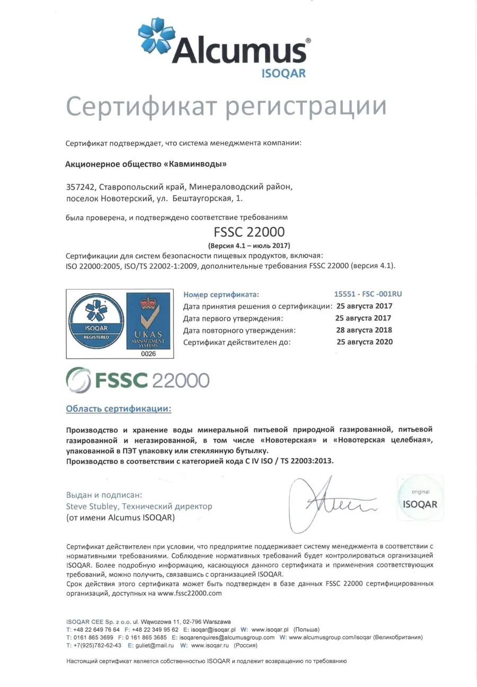
В апреле 2017 года акционерное общество «Кавминводы» отпраздновало солидную дату — 20 лет со дня выпуска первой бутылки минеральной воды «Новотерская целебная». Система менеджмента качества пищевой продукции АО «Кавминводы» в 2017 году была сертифицирована на соответствие международному стандарту FSSC 22000. По результатам лабораторных испытаний, проведённых автономной некоммерческой организацией «Российская система качества», питьевая вода «Новотерская» подтвердила высокое качество и соответствие не только требованиям действующих норм по качеству и безопасности, но и требованиям опережающего стандарта Роскачества.
-
2019
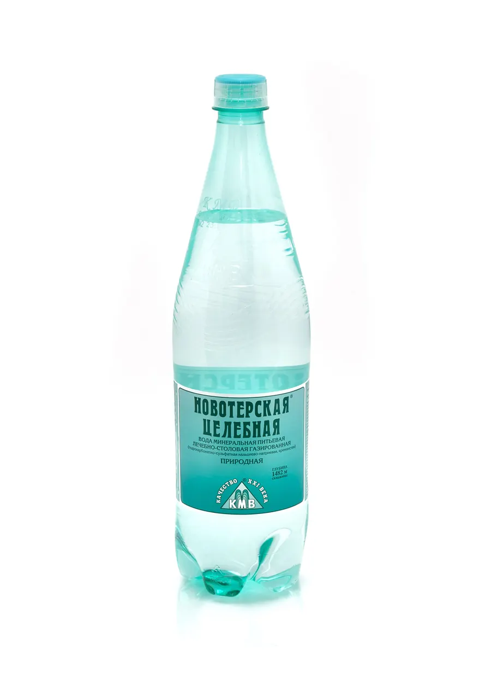
Ассортиментная линейка минеральной воды «Новотерская целебная» пополнилась ПЭТ-бутылкой ёмкостью 1 л.
-
2020
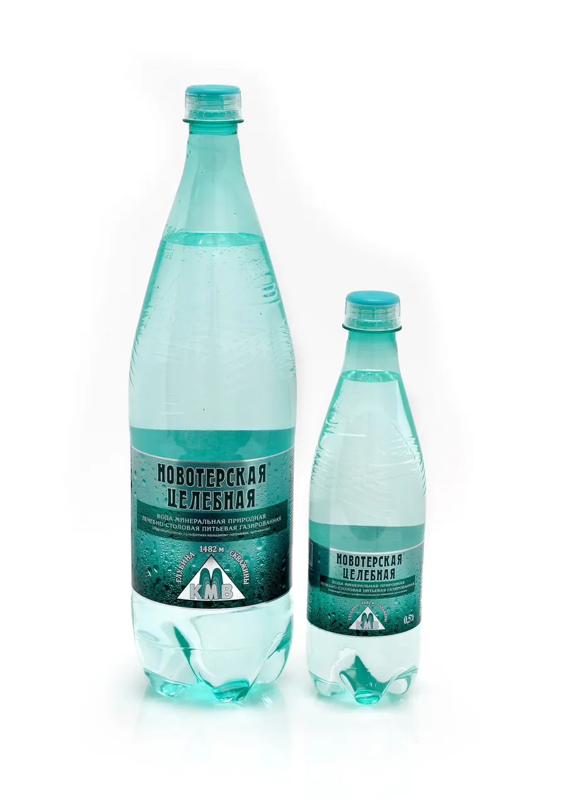
В феврале 2020 года предприятие отметило 25-летие со дня основания. На заводе проведены мероприятия для защиты продукции от контрафакта: разработан сложный дизайн этикетки, для укупорки продукции стал использоваться прозрачный колпачок с тиснением логотипа.
-
2022
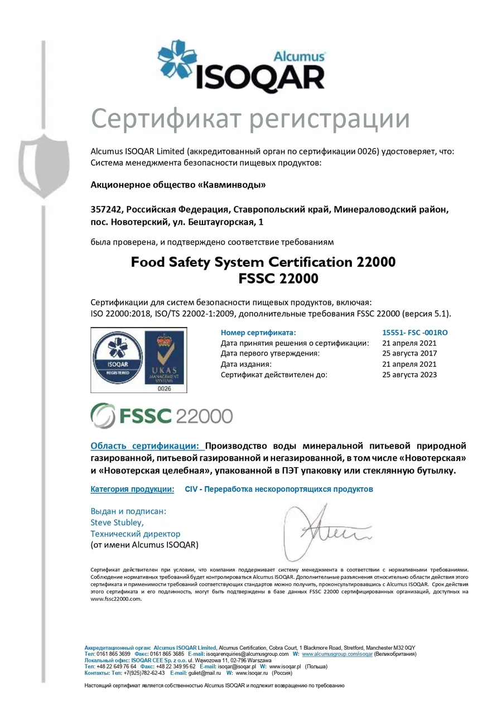
В апреле 2022 года АО «Кавминводы» подтвердило соответствие системы менеджмента качества пищевой продукции международному стандарту FSSC 22000.
-
2023
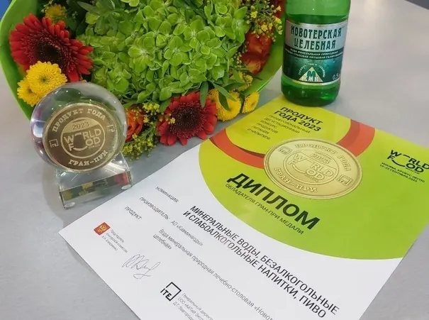
Продукция предприятия получила сертификаты систем добровольной сертификации «Роскачество» и «Сделано в России», гран-при конкурса «Продукт года — 2023» и награду правительства Ставропольского края «Ставропольское качество».
-
2024
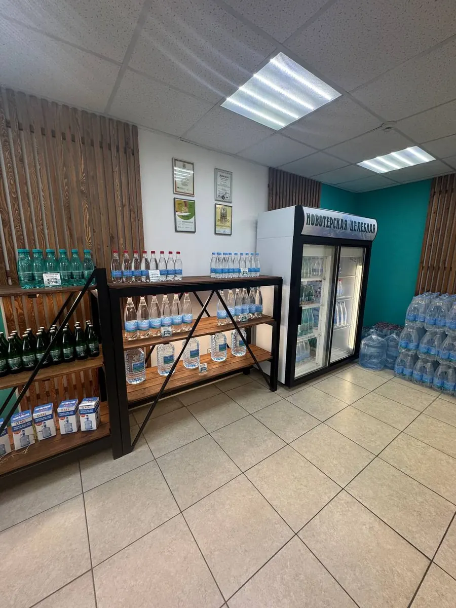
По многочисленным просьбам отдыхающих и клиентов открыт фирменный магазин в городе-курорте Пятигорске.
-
2025
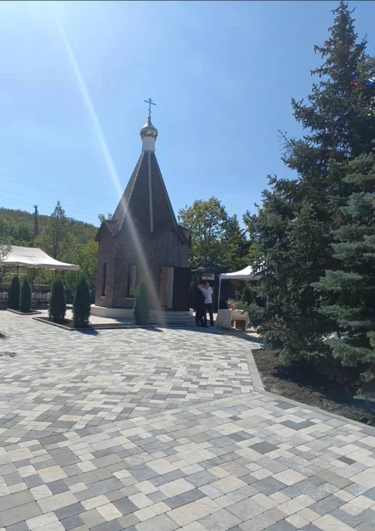
22 сентября на территории завода состоялось великое освящение часовни святой мученицы Натальи — первого храма на площадке предприятия. Чин освящения совершил архиепископ Пятигорский и Черкесский Феофилакт.
Часовню поставили рядом с производственными цехами — чтобы и у заводчан, и у гостей было место для тихой минуты. На заводе этот день считают знаком преемственности поколений и уважения к тем, кто стоял у истоков предприятия.
Три десятилетия в датах и фотографиях — от регистрации предприятия в 1995 году до сегодняшнего дня
тел./факс: 8 (87922) 7-14-09